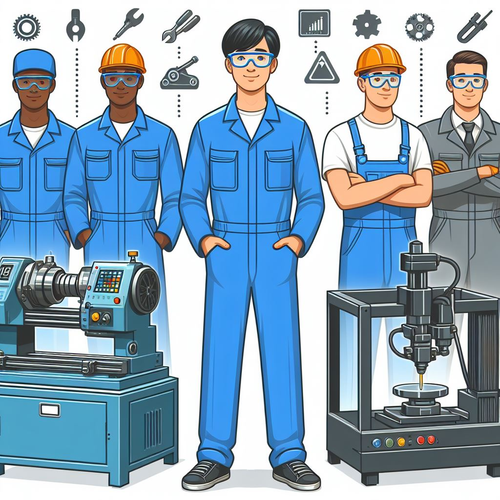

エネルギー機械コース
このサイトは、大阪公立大学工業高等専門学校のエネルギー機械コースの紹介サイトです。
2年生からコース配属をされるので、本校に進学を考える皆さんは、ぜひ参考にしてください。

コース紹介
エネルギー機械コース(通称Mコース)では、
- 輸送機械や発電所等の産業インフラの設計と運用に必要な技術
- 水素エネルギー等のクリーンエネルギーの創生と貯蔵に関する技術
- 自然災害の予測分析や対策に関する技術
これらを教育課程の特色とし、人のより良い暮らしと環境との共生を実現する技術者の育成を目指します。
コースで学ぶ専門科目
2年生では、機械工学概論、基礎製図、電気・電子回路、シーケンス制御を学びます。
3年生では、材料力学入門、熱力学入門、流体力学入門、機械工作法、CAD製図を学びます。
4年生では、材料力学、熱力学、流れ学、機械力学、材料学、数値計算を学びます。
5年生では、機械設計、伝熱工学、流体工学、生産加工工学、制御工学、エネルギー変換工学を学びます。
また、各学年では、実習・実験系の科目が一つずつあります。
学習単位科目は、授業に加えて自宅学習の時間が必要となる科目です。学年が上がるにつれて、学習単位科目の数が増えるので頑張りましょう。
教員紹介
エネルギー機械コースには、様々な専門分野に強い教員の方がそろっています。
- 石川先生(流体工学)
- 君家先生(材料工学)
- 上村先生(流体工学)
- 久野先生(環境分析化学)
- 杉浦先生(エネルギー工学)
- 塚本先生(材料力学)
- 西岡先生(生物工学)
- 平林先生(化学工学)
- 大谷先生(沿岸環境化学)
- 白柳先生(材料工学)
- 中津先生(設計工学)
在学生が答えるよくある質問
- エネルギー機械コースでは、エネルギーと機械系しか学ばないのですか。
ー高学年になるほどその傾向は強くなりますが、それまでは他のコースの科目を学ぶことができるので
幅広く学ぶことができます。
- 専門の先生は怖い人が多いですか。
ーそんなことはありません。優しい先生が多いです。
- 卒業後の進路はどうなりますか。
ー進学か就職に分かれます。進学だと大学入学共通テストを受験する必要がなく、特別な受験勉強をする必要がありません。
編入学希望の90％以上の学生が国公立大学に合格しています。就職だと求人倍率は毎年20倍を超えるので、ほぼ確実に就職することができます。
- エネルギー機械コースの就職先の例を教えてください。
ー2022年度から新カリキュラムが始まり、エネルギー機械コースができたので、エネルギー機械コースの就職先は分かりません。
現時点では、旧コースの機械システムコースの就職先と似てくると考えています。詳しくは
こちらをご覧ください。
最後に